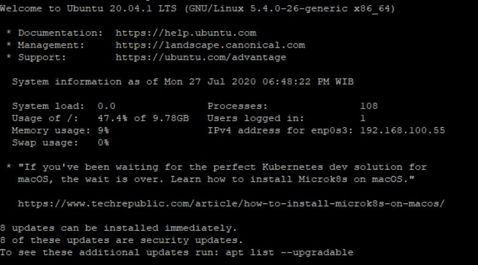

Introduce Ubuntu Server 20.04 LTS
Introduce Ubuntu Server 20.04 LTS
Ubuntu adalah sistem operasi desktop yang pertama kali dirilis pada 20 Oktober 2004 dan dikembangkan oleh Cannonical Ltd. Sementara itu, Ubuntu Server adalah Ubuntu yang dikembangkan khusus untuk sistem operasi server. Pada Ubuntu Server tidak disediakan Graphical User Interface (GUI)
Ubuntu server adalah ubuntu yang didesain untuk di install di server. Perbedaan mendasar, di Ubuntu Server tidak tersedia GUI. Jika anda menggunakan ubuntu server artinya anda harus bekerja dengan perintah perintah di layar hitam yang sering disebut konsole. Jika anda datang dari windows, maka tampilan ubuntu server seperti DOS. Contoh Tampilannya seprti berikut :

Sejarah singkat ubuntu :
Ubuntu adalah sistem operasi berbasis linux open source, yang artinya os ubuntu ini tersedia secara bebas dan banyak komunitas maupun tenaga ahli propesional yang mendukung adanya operasi sistem ubuntu ini
Ubuntu pertama kali dirilis pada tanggal 20Oktober 2004. Ubuntu salah satu proyek andalan Debian, yang bertujuan untuk menciptakan sebuah sistem operasi yang mudah di pakai oleh pengguna. Setiap 6 bulan sekali ubuntu melakukan pembaharuan sistem keamanan. kesalahan(bug). etiap 2 tahun sekali (versi xx.04 dengan x angka genap) akan mendapatkan Long Term Support (LTS) selama 3 tahun untuk desktop dan 5 tahun untuk edisi server.
Ubuntu sekarang dibiayai oleh Canonocal Ltd. Pada 8 Juli 2005 Mark Shuttleworth mendirikan pendirian Ubuntu Foundation dan memberikan pendanaan awal sebesar US$10 juta. Tujuan dari pendirian yayasan ini adalah untuk memastikan pengembangan dan dukungan semua versi Ubuntu dapat terus berjalan.
Nama Ubuntu diambil dari nama sebuah konsep ideologi di Afrika Selatan. “Ubuntu” berasal dari bahasa kuno Afrika, yang berarti “rasa perikemanusian terhadap sesama manusia”. Ubuntu juga bisa berarti “aku adalah aku karena keberadaan kita semua”. Tujuan dari distribusi Linux Ubuntu adalah membawa semangat yang terkandung di dalam Ubuntu ke dalam dunia perangkat lunak
Pada 31 Oktober 2011, Mark Shuttleworth mengumumkan bahwa Ubuntu 14.04 akan mendukung smartphone, tablet, dan smart TV. Dan desain-desainnya pun sudah mulai dirancang.